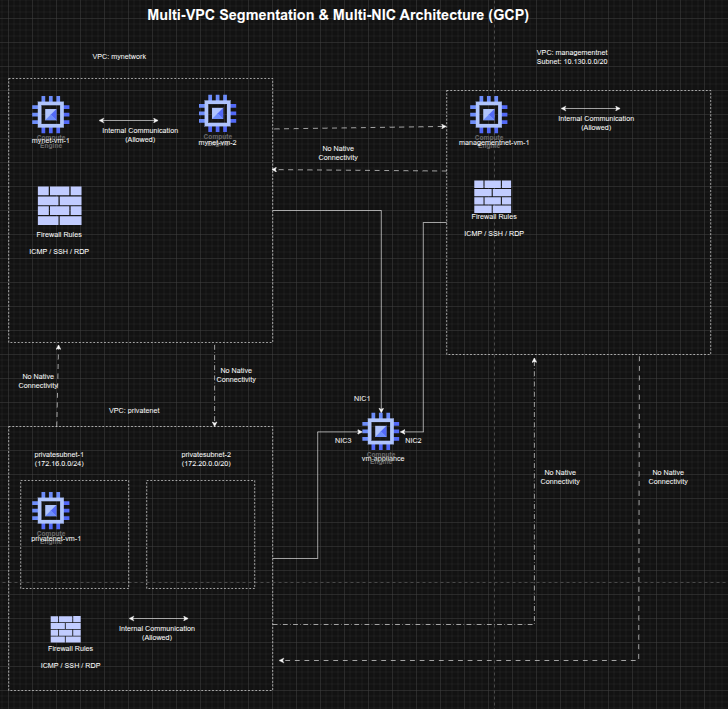

Multi-VPC Network Segmentation and Multi-NIC Appliance Design on GCP
Multi-VPC Network Segmentation and Multi-NIC Appliance Design on GCP
Timeline: December 2025
Role: Cloud Network Engineer / Cloud Architect
Skills: Google Cloud VPC, Subnets, Firewall Rules, Compute Engine, Multi-NIC VM Design, Routing, Internal DNS, Network Segmentation
Project Summary
This project focused on designing and validating a segmented multi-VPC network architecture on Google Cloud Platform (GCP). The implementation used multiple custom-mode VPC networks, dedicated subnets, targeted firewall rules, and Compute Engine virtual machines to demonstrate how network isolation affects connectivity across environments.
The project also extended the design by deploying a multi-network-interface appliance VM connected to multiple VPCs, showing how a single instance can participate in separate network domains while still being governed by routing behavior and interface-specific connectivity rules. This lab covered custom VPC creation, firewall configuration, connectivity testing, and multi-NIC routing behavior. :contentReference[oaicite:0]{index=0}
Objectives
- Create custom-mode VPC networks and subnets
- Configure firewall rules for SSH, RDP, and ICMP access
- Deploy Compute Engine instances into separate VPC environments
- Validate external and internal connectivity behavior across VPCs
- Design and deploy a VM with multiple network interfaces
- Analyze routing behavior and interface-level reachability
Architecture Overview
The architecture consisted of:
- An existing mynetwork VPC with two pre-created VM instances
- A newly created managementnet custom VPC with:
managementsubnet-1(10.130.0.0/20)- firewall rules allowing ICMP, SSH, and RDP
- A newly created privatenet custom VPC with:
privatesubnet-1(172.16.0.0/24)privatesubnet-2(172.20.0.0/20)- firewall rules allowing ICMP, SSH, and RDP
- VM instances deployed in the separate VPCs:
managementnet-vm-1privatenet-vm-1- existing
mynet-vm-1 - existing
mynet-vm-2
- A multi-NIC appliance VM named
vm-applianceattached to:privatesubnet-1managementsubnet-1mynetwork
- Connectivity and routing tests validating public reachability, private network isolation, and multi-interface routing behavior. :contentReference[oaicite:1]{index=1}

Implementation & Highlights
1. Custom VPC Network Creation
- Created two custom-mode VPC networks:
managementnetprivatenet
- Provisioned dedicated subnets in different regions and CIDR ranges
- Used custom-mode networking to explicitly control subnet creation instead of relying on automatically provisioned regional subnets. :contentReference[oaicite:2]{index=2}
2. Firewall Rule Design
- Configured ingress firewall rules for both VPCs
- Allowed:
- ICMP
- TCP 22 (SSH)
- TCP 3389 (RDP)
- Applied rules to support administration and connectivity testing across the segmented environments. :contentReference[oaicite:3]{index=3}
3. VM Deployment Across Isolated Networks
- Created Compute Engine instances in the new VPCs:
managementnet-vm-1privatenet-vm-1
- Compared them with the pre-existing instances in
mynetwork - Established a multi-network test environment spanning separate VPC boundaries and subnets. :contentReference[oaicite:4]{index=4}
4. Connectivity Validation Across VPCs
- Tested external IP reachability from one instance to others
- Confirmed that public connectivity depended on firewall rules rather than shared VPC membership
- Tested internal IP connectivity
- Verified that internal communication worked only between instances in the same VPC network and failed across isolated VPCs by default. :contentReference[oaicite:5]{index=5}
5. Multi-NIC Appliance Design
- Created a VM named
vm-appliancewith three network interfaces - Connected the appliance directly to:
privatenetmanagementnetmynetwork
- Demonstrated how a single VM can span multiple isolated network domains when attached through multiple NICs. :contentReference[oaicite:6]{index=6}
6. Route and Interface Analysis
- Inspected interface configuration inside the appliance VM
- Verified the presence of multiple interfaces and subnet-specific internal IP addresses
- Examined routing behavior and confirmed:
- directly connected subnets were reachable through their corresponding interfaces
- the default route was associated with the primary interface
- Observed that traffic to destinations outside directly connected subnets followed the default route, leading to expected connectivity limitations. :contentReference[oaicite:7]{index=7}
7. Internal DNS and Reachability Testing
- Validated that instance name resolution worked within VPC scope using internal DNS
- Confirmed that hostname-based reachability mapped to the primary interface of the destination VM
- Used ping-based testing to illustrate successful and failed paths based on subnet routes and interface placement. :contentReference[oaicite:8]{index=8}
Design Decisions
- Used custom-mode VPCs to maintain explicit control over subnet allocation and network boundaries
- Applied network-level segmentation to demonstrate that private communication is isolated by VPC unless additional interconnect mechanisms are configured
- Used a multi-NIC appliance pattern to simulate a bridging or inspection-style instance spanning multiple network domains
- Preserved non-overlapping CIDR ranges to support multiple interfaces on the same VM without subnet conflicts
- Analyzed route selection to understand how primary-interface default routing affects multi-homed workloads. :contentReference[oaicite:9]{index=9}
Results & Impact
- Successfully designed and deployed a segmented multi-VPC environment on GCP
- Demonstrated the distinction between:
- public reachability through firewall-permitted external IPs
- private reachability constrained by VPC boundaries
- Validated the practical behavior of multi-interface appliances in cloud networks
- Strengthened understanding of:
- VPC isolation
- subnet design
- firewall policy behavior
- internal DNS
- route selection for multi-homed instances. :contentReference[oaicite:10]{index=10}
Tools & Technologies Used
- Google Cloud VPC – Isolated virtual network design
- Custom Subnets – Controlled IP range allocation
- Firewall Rules – ICMP, SSH, and RDP access control
- Compute Engine – VM deployment and testing
- Multi-NIC VM Design – Cross-network attachment pattern
- Internal DNS – Name-based resolution inside VPCs
- Linux Networking Tools – Route and interface inspection
Outcome
This project demonstrates the ability to design and validate segmented cloud network architectures on Google Cloud, including multi-VPC communication boundaries and multi-interface appliance patterns. It highlights practical skills in network isolation, routing analysis, firewall configuration, and multi-homed VM design, which are directly relevant to cloud networking, security engineering, and cloud architecture roles.